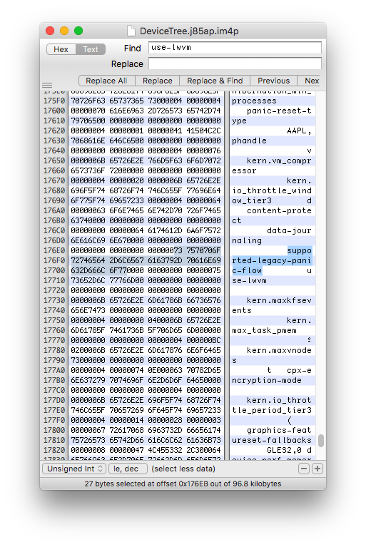

Modifying filesystem
Mount System partition:mount_apfs /dev/disk0s1s3 /mnt1
And modify fstab using nano:cp -a /etc/fstab /mnt1/etc/fstab
nano /mnt1/etc/fstab
 Change disk0s1s1 to disk0s1s3 and disk0s1s2 to disk0s1s4. (or the new system and data partitions disks based on the device.) Press CTRL-O to save and CTRL-X to exit.Now we have to add SEP to the second system:
cp -a /usr/standalone/firmware/sep* /mnt1/usr/standalone/firmware/
Also add the baseband firmware:
cp -av /usr/local /mnt1/usr/local
The baseband is located inside of /usr/local, and the firmware names vary across devices. We can just copy it since the /usr/local path does not exist on the new system.
Fixing Baseband and Touch ID
cp -av /System/Library/Caches/com.apple.factorydata/ /mnt1/System/Library/Caches/
Now the secondary OS can be activated properly with working service!
Modifying data partition
Now we have to move /private/var to new Data partition:
mount_apfs /dev/disk0s1s4 /mnt2
mv -v /mnt1/private/var/* /mnt2
The system requires this folder to be present on newer devices which have a baseband data paritition:
mkdir /mnt2/wireless/baseband_data
Notes for haptic devices
With the introduction of the iPhone 6s, Apple began to utilize a haptic feedback engine in their devices, mainly for 3D Touch. The iPhone 7(+) and 8(+) also shipped with capacitive home buttons which do not physically click, but instead use the haptic engine to simulate a click.
In order to fix haptics on the second operating system, we must copy FUD data restored to the main install.
copy FUD data to new system:
cp -av /usr/standalone/firmware/FUD /mnt1/usr/standalone/firmware
In order for the secondary system to see this data as valid, it is also required to copy the main OS apticket (as the FUD images are signed with those)
cp -av /System/Library/Caches/apticket.der /mnt1/System/Library/Caches
Now 3D touch feedback and home buttons will work as intended!